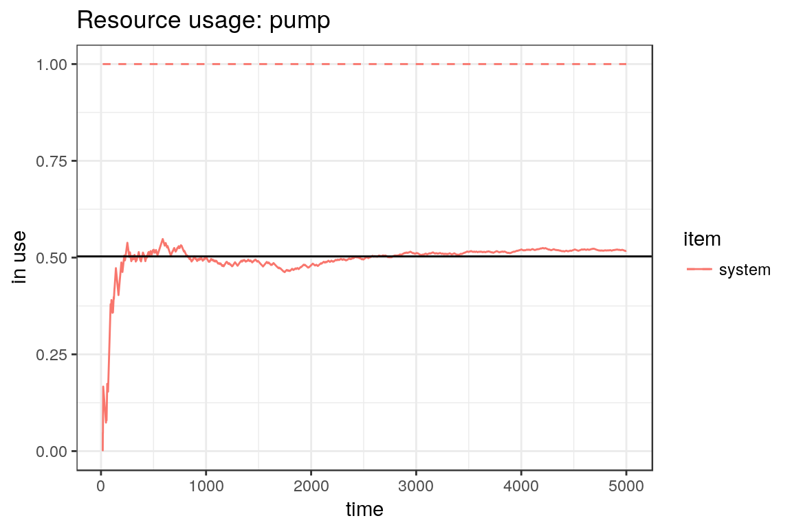
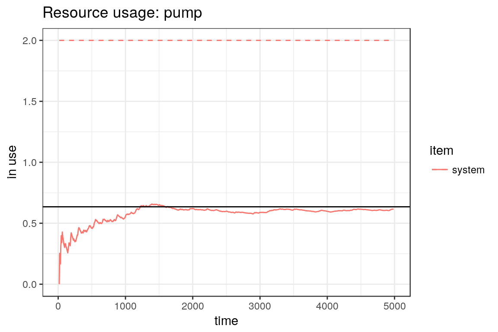
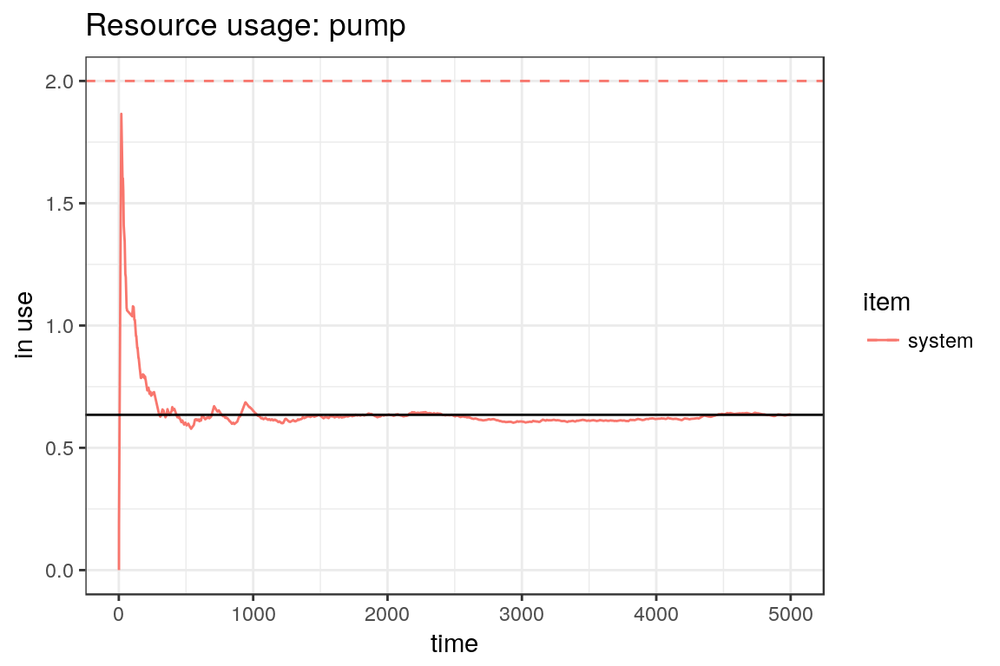

library(simmer)
library(ggplot2)
library(dplyr)
library(tidyr)
set.seed(1234)A gas station has a single pump and no space for vehicles to wait (if a vehicle arrives and the pump is not available, it leaves). Vehicles arrive to the gas station following a Poisson process with a rate of \(\lambda=3/20\) vehicles per minute, of which 75% are cars and 25% are motorcycles. The refuelling time can be modelled with an exponential random variable with mean 8 minutes for cars and 3 minutes for motorcycles, that is, the services rates are \(\mu_\mathrm{c}=1/8\) cars and \(\mu_\mathrm{m}=1/3\) motorcycles per minute respectively.
This problem is described by the following continuous-time Markov chain:
\[\xymatrix{ *=<15mm,8mm>[o][F]{car} \ar@/^/[r]^{\mu_\mathrm{c}} & *=<15mm,8mm>[o][F]{empty} \ar@/^/[l]^{p\lambda} \ar@/^/[r]^{(1-p)\lambda} & *=<15mm,8mm>[o][F]{m/cycle} \ar@/^/[l]^{\mu_\mathrm{m}} }\qquad\qquad Q = \begin{pmatrix} -\mu_\mathrm{c} & \mu_\mathrm{c} & 0 \\ p\lambda & -\lambda & (1-p) \lambda \\ 0 & \mu_\mathrm{m} & -\mu_\mathrm{m} \end{pmatrix}\]
with \(p=0.75\). The chain is irreducible and recurrent. To theoretically find the steady state distribution, we have to solve the balance equations
\[pQ = 0\]
with the constraint
\[\sum_i p_i = 1\]
There are \(\operatorname{dim}(Q)-1\) independent columns, so the latter constraint is equivalent to substitute any column by ones and match it to one at the other side of the equation, that is:
\[p\cdot\begin{pmatrix} 1 & 1/8 & 0 \\ 1 & -3/20 & 0.25\cdot 3/20 \\ 1 & 1/3 & -1/3 \end{pmatrix} = (1, 0, 0)\]
The solution \(p\) represents the probability of being at each state in the long-term. Therefore, we can calculate the average number of vehicles in the system by summing these probabilities multiplied by the number of vehicles at each state. In our case,
\[N = 1\cdot p_1 + 0\cdot p_2 + 1\cdot p_3\]
# Arrival rate
lambda <- 3/20
# Service rate (cars, motorcycles)
mu <- c(1/8, 1/3)
# Probability of car
p <- 0.75
# Theoretical resolution
A <- matrix(c(1, mu[1], 0,
1, -lambda, (1-p)*lambda,
1, mu[2], -mu[2]), byrow=T, ncol=3)
B <- c(1, 0, 0)
P <- solve(t(A), B)
N_average_theor <- sum(P * c(1, 0, 1)) ; N_average_theor
#> [1] 0.5031056Now, we are going to simulate the system with simmer and verify that it converges to the theoretical solution. There are various options for selecting the model. As a first approach, due to the properties of Poisson processes, we can break down the problem into two trajectories (one for each type of vehicle), which differ in their service time only, and therefore two generators with rates \(\lambda_\mathrm{c} = p\lambda\) and \(\lambda_\mathrm{m} = (1-p)\lambda\).
option.1 <- function(t) {
car <- create_trajectory() %>%
seize("pump", amount=1) %>%
timeout(function() rexp(1, mu[1])) %>%
release("pump", amount=1)
mcycle <- create_trajectory() %>%
seize("pump", amount=1) %>%
timeout(function() rexp(1, mu[2])) %>%
release("pump", amount=1)
simmer() %>%
add_resource("pump", capacity=1, queue_size=0) %>%
add_generator("car", car, function() rexp(1, p*lambda)) %>%
add_generator("mcycle", mcycle, function() rexp(1, (1-p)*lambda)) %>%
run(until=t)
}Other arrival processes may not have this property, so we would define a single generator for all kind of vehicles and a single trajectory as follows. In order to distinguish between cars and motorcycles, we could define a branch after seizing the resource to select the proper service time.
option.2 <- function(t) {
vehicle <- create_trajectory() %>%
seize("pump", amount=1) %>%
branch(function() sample(c(1, 2), 1, prob=c(p, 1-p)), c(T, T),
create_trajectory("car") %>%
timeout(function() rexp(1, mu[1])),
create_trajectory("mcycle") %>%
timeout(function() rexp(1, mu[2]))) %>%
release("pump", amount=1)
simmer() %>%
add_resource("pump", capacity=1, queue_size=0) %>%
add_generator("vehicle", vehicle, function() rexp(1, lambda)) %>%
run(until=t)
}But this option adds an unnecessary overhead since there is an additional call to an R function to select the branch, and therefore performance decreases. A much better option is to select the service time directly inside the timeout function.
option.3 <- function(t) {
vehicle <- create_trajectory() %>%
seize("pump", amount=1) %>%
timeout(function() {
if (runif(1) < p) rexp(1, mu[1]) # car
else rexp(1, mu[2]) # mcycle
}) %>%
release("pump", amount=1)
simmer() %>%
add_resource("pump", capacity=1, queue_size=0) %>%
add_generator("vehicle", vehicle, function() rexp(1, lambda)) %>%
run(until=t)
}This option.3 is equivalent to option.1 in terms of performance. But, of course, the three of them lead us to the same result. For instance,
gas.station <- option.3(5000)
# Evolution + theoretical value
graph <- plot_resource_usage(gas.station, "pump", items="system")
graph + geom_hline(yintercept=N_average_theor)
And these are some performance results:
library(microbenchmark)
t <- 1000/lambda
tm <- microbenchmark(option.1(t),
option.2(t),
option.3(t))
graph <- autoplot(tm)
graph + scale_y_log10(breaks=function(limits) pretty(limits, 5)) +
ylab("Time [milliseconds]")Let us complicate things a bit. Consider the previous example, but, this time, there is space for one motorcycle to wait while the pump is being used by another vehicle. In other words, cars see a queue size of 0 and motorcycles see a queue size of 1.
The new Markov chain is the following:
\[\vcenter{\xymatrix{ *=<15mm,8mm>[o][F]{car+} \ar@(r,u)[drr]^{\mu_\mathrm{c}} \\ *=<15mm,8mm>[o][F]{car} \ar@/_/[r]_{\mu_\mathrm{c}} \ar@/^/[u]^{(1-p)\lambda} & *=<15mm,8mm>[o][F]{empty} \ar@/_/[l]_{p\lambda} \ar@/^/[r]^{(1-p)\lambda} & *=<15mm,8mm>[o][F]{m/cycle} \ar@/^/[l]^{\mu_\mathrm{m}} \ar@/_/[d]_{(1-p)\lambda} \\ & & *=<15mm,8mm>[o][F]{m/c+} \ar@/_/[u]_{\mu_\mathrm{m}} }}\]
\[Q = \begin{pmatrix} -\mu_\mathrm{c} & 0 & 0 & \mu_\mathrm{c} & 0 \\ (1-p)\lambda & -(1-p)\lambda-\mu_\mathrm{c} & \mu_\mathrm{c} & 0 & 0 \\ 0 & p\lambda & -\lambda & (1-p)\lambda & 0 \\ 0 & 0 & \mu_\mathrm{m} & -(1-p)\lambda-\mu_\mathrm{m} & (1-p)\lambda \\ 0 & 0 & 0 & \mu_\mathrm{m} & -\mu_\mathrm{m} \\ \end{pmatrix}\]
where the states car+ and m/c+ represent car + waiting motorcycle and motorcycle + waiting motorcycle respectively.
With \(p\) the steady state distribution, the average number of vehicles in the system is given by
\[N = 2(p_1 + p_5) + p_2 + p_4\]
# Theoretical resolution
A <- matrix(c(1, 0, 0, mu[1], 0,
1, -(1-p)*lambda-mu[1], mu[1], 0, 0,
1, p*lambda, -lambda, (1-p)*lambda, 0,
1, 0, mu[2], -(1-p)*lambda-mu[2], (1-p)*lambda,
1, 0, 0, mu[2], -mu[2]),
byrow=T, ncol=5)
B <- c(1, 0, 0, 0, 0)
P <- solve(t(A), B)
N_average_theor <- sum(P * c(2, 1, 0, 1, 2)) ; N_average_theor
#> [1] 0.6349615As in the first example, we can simulate this chain by breaking down the problem into two trajectories (one for each type of vehicle and service rate) and two generators. But in order to disallow cars to stay in the pump’s queue, we need to introduce a little trick in the cars’ seize: the argument amount is a function that returns 1 if the pump is vacant and 2 otherwise. This implies that the car gets rejected, because there is only one position in queue and that seize is requesting two positions. Note also that the environment env must be defined before running, as it is needed inside the trajectory.
option.1 <- function(t) {
car <- create_trajectory() %>%
seize("pump", amount=function() {
if (env %>% get_server_count("pump")) 2 # rejection
else 1 # serve
}) %>%
timeout(function() rexp(1, mu[1])) %>%
release("pump", amount=1)
mcycle <- create_trajectory() %>%
seize("pump", amount=1) %>%
timeout(function() rexp(1, mu[2])) %>%
release("pump", amount=1)
env <- simmer() %>%
add_resource("pump", capacity=1, queue_size=1) %>%
add_generator("car", car, function() rexp(1, p*lambda)) %>%
add_generator("mcycle", mcycle, function() rexp(1, (1-p)*lambda))
env %>% run(until=t)
}The same idea using a branch, with a single generator and a single trajectory.
option.2 <- function(t) {
vehicle <- create_trajectory() %>%
branch(function() sample(c(1, 2), 1, prob=c(p, 1-p)), c(F, F),
create_trajectory("car") %>%
seize("pump", amount=function() {
if (env %>% get_server_count("pump")) 2 # rejection
else 1 # serve
}) %>%
timeout(function() rexp(1, mu[1])) %>%
release("pump", amount=1), # always 1
create_trajectory("mcycle") %>%
seize("pump", amount=1) %>%
timeout(function() rexp(1, mu[2])) %>%
release("pump", amount=1))
env <- simmer() %>%
add_resource("pump", capacity=1, queue_size=1) %>%
add_generator("vehicle", vehicle, function() rexp(1, lambda))
env %>% run(until=t)
}We may also avoid messing up things with branches and subtrajectories. We can decide the type of vehicle and set it as an attribute of the arrival with set_attribute. Then, every activity’s function is able to retrieve those attributes as a named list. Although the branch option is a little bit faster, this one is nicer, because there are no subtrajectories involved.
option.3 <- function(t) {
vehicle <- create_trajectory("car") %>%
set_attribute("vehicle", function() sample(c(1, 2), 1, prob=c(p, 1-p))) %>%
seize("pump", amount=function(attrs) {
if (attrs["vehicle"] == 1 &&
env %>% get_server_count("pump")) 2 # car rejection
else 1 # serve
}) %>%
timeout(function(attrs) rexp(1, mu[attrs["vehicle"]])) %>%
release("pump", amount=1) # always 1
env <- simmer() %>%
add_resource("pump", capacity=1, queue_size=1) %>%
add_generator("vehicle", vehicle, function() rexp(1, lambda))
env %>% run(until=t)
}But if performance is a requirement, we can play cleverly with the resource capacity and the queue size, and with the amounts requested in each seize, in order to model the problem without checking the status of the resource. Think about this:
capacity=3 and queue_size=2.amount=3.amount=2.In these conditions, we have the following possibilities:
Just as expected! So, let’s try:
option.4 <- function(t) {
vehicle <- create_trajectory() %>%
branch(function() sample(c(1, 2), 1, prob=c(p, 1-p)), c(F, F),
create_trajectory("car") %>%
seize("pump", amount=3) %>%
timeout(function() rexp(1, mu[1])) %>%
release("pump", amount=3),
create_trajectory("mcycle") %>%
seize("pump", amount=2) %>%
timeout(function() rexp(1, mu[2])) %>%
release("pump", amount=2))
simmer() %>%
add_resource("pump", capacity=3, queue_size=2) %>%
add_generator("vehicle", vehicle, function() rexp(1, lambda)) %>%
run(until=t)
}We are still wasting time in the branch decision. We can mix this solution above with the option.1 to gain extra performance:
option.5 <- function(t) {
car <- create_trajectory() %>%
seize("pump", amount=3) %>%
timeout(function() rexp(1, mu[1])) %>%
release("pump", amount=3)
mcycle <- create_trajectory() %>%
seize("pump", amount=2) %>%
timeout(function() rexp(1, mu[2])) %>%
release("pump", amount=2)
simmer() %>%
add_resource("pump", capacity=3, queue_size=2) %>%
add_generator("car", car, function() rexp(1, p*lambda)) %>%
add_generator("mcycle", mcycle, function() rexp(1, (1-p)*lambda)) %>%
run(until=t)
}Options 1, 2 and 3 are slower, but they give us the correct numbers, because the parameters (capacity, queue size, amounts) in the model remain unchanged compared to the problem. For instance,
gas.station <- option.1(5000)
# Evolution + theoretical value
graph <- plot_resource_usage(gas.station, "pump", items="system")
graph + geom_hline(yintercept=N_average_theor)
However, it is not the case in options 4 and 5. The parameters of these models are adulterated to fit our performance purposes. Therefore, we need to extract the RAW data, rescale the numbers and plot them. And, of course, we get the same figure:
gas.station <- option.5(5000)
limits <- data.frame(item = c("system"), value = c(2))
graph <- gas.station %>% get_mon_resources() %>%
gather(item, value, server, queue, system) %>%
mutate(value = round(value * 2/5), # rescaling here <------
item = factor(item)) %>%
filter(item %in% "system") %>%
group_by(resource, replication, item) %>%
mutate(mean = c(0, cumsum(head(value, -1) * diff(time))) / time) %>%
ungroup() %>%
ggplot() + aes(x=time, color=item) +
geom_line(aes(y=mean, group=interaction(replication, item))) +
ggtitle("Resource usage: pump") +
ylab("in use") + xlab("time") + expand_limits(y=0) +
geom_hline(aes(yintercept=value, color=item), limits, lty=2)
graph + geom_hline(yintercept=N_average_theor)
Finally, these are some performance results:
library(microbenchmark)
t <- 1000/lambda
tm <- microbenchmark(option.1(t),
option.2(t),
option.3(t),
option.4(t),
option.5(t))
graph <- autoplot(tm)
graph + scale_y_log10(breaks=function(limits) pretty(limits, 5)) +
ylab("Time [milliseconds]")